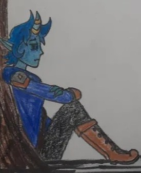
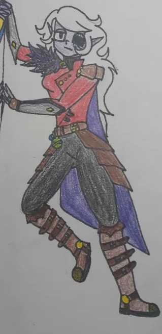
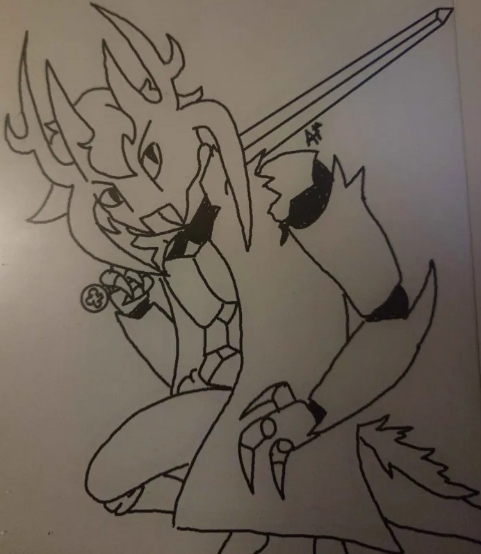
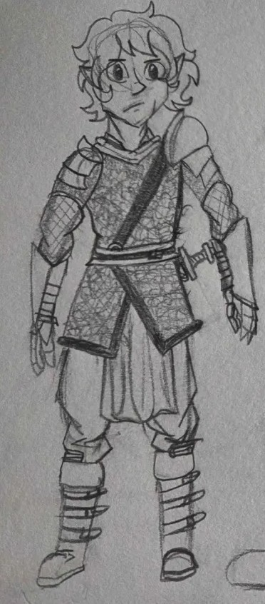
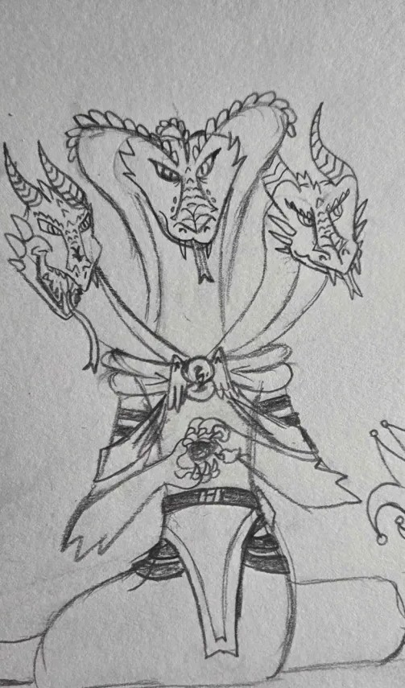

Playing D&D I grew up playing different classes that I loved throughout playing the game and Being a Dungeon Master (DM) seeing other players play extremely vibrant and exciting characters.
-

This is one of my most exciting character to play as since my teifling ranger code has the ability to summon a familiar to my side to support me with the fact that they have the ability to use magic with the range or a bow. Rangers also have one of the best kits for traversing difficult areas and supporting the group by removing horrible status effects. -

Misfit was one that my fiancé made that is a potent combo of survivability with the raw power to summon the undead to come to your aid that allows you to cast your devastating spells without being messed with enemies getting to close to you. -

Voxel was another character made by fiancé that shows the brute power and ingenuity of a artificer battle smith. This class run on the users per imagination to create and go wild with it with spells to help with keeping your contraptions in tip top shape. -

When I was playing D&D I came across the character and loved the idea of a spell sword type of knight that my player made and fell in love with. Fighter always had the freedom and simplicity that I always recommend someone first staring to play D&D but also has the ability to really make it into what you want like a spell sword knight that goes into the enemies face and casts devastating spells at people. -

Yuan-ti which are snake creature have always been an interesting race but combined with the potent spells a sorcerer can sling out is a amazing scene. Sorcerer has always been a revered class amongst the community and for good reason due to its capacity to manipulate spells to be extremely potent or give more bang for your buck